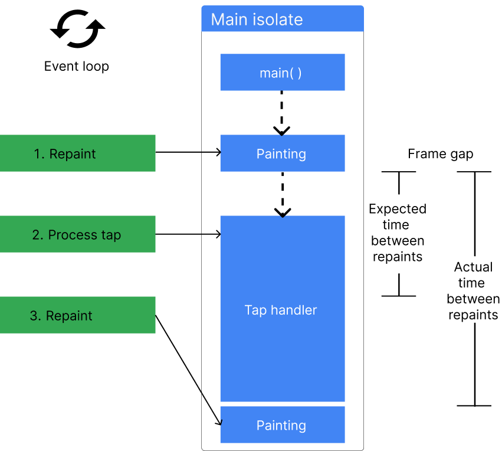
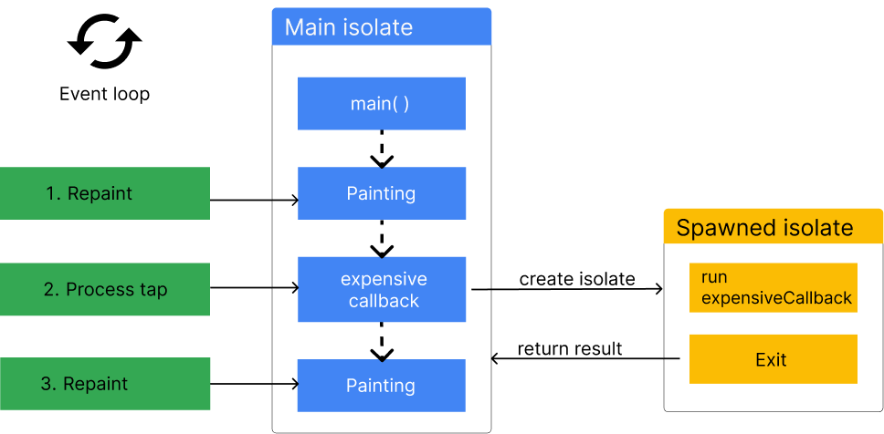
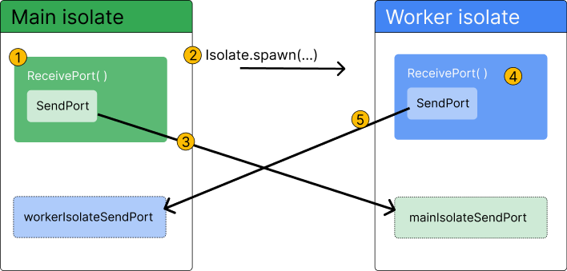

- Dart isolate 관련 문서들을 참고하여 isolate의 개념 및 동작방식을 요약한다.
- 참고한 문서
Isolate 사용 이유
- 모든 Dart code는 기본적으로 main isolate에서 실행된다.
- Main isolates의 event loop는 UI paint, I/O, user input 등 UI 관련 event들을 처리한다.
- Main isolate에서 시간이 오래 걸리는 작업을 실행하면 event loop가 다음 repaint event 처리 시점을 놓치게 되면서 UI freezing이 발생할 수 있다.

- 이 문제를 해결하기 위해 시간이 오래 걸리는 작업을 다른 isolate에서 실행시키고, 작업 완료 시 결괏값을 비동기적으로 반환 받아서 사용한다.

- Isolate들은 memory가 완벽하게 격리되어 있고 자신만의 event loop도 갖고 있으므로, 다른 worker isolate에서 오래된 작업을 실행해도 main isolate에 영향을 주지 않는다.
Isolate 특징
- Isolate는 일반적인 thread와 비슷한 개념이지만, thread와 달리 isolate들이 shared memory 없이 완벽하게 격리(isolated) 되어 있다는 차이가 있다.
- Isolate 간에 shared memory가 없으므로,
- isolate 간의 communication은 반드시 message channel을 통해야 한다. (
ReceivePort,SendPort사용) - global mutable variable, static field 등도 isolate 별로 분리되어 있다.
- shared state가 존재하지 않는다. State를 변경해도 isolate간 동기화가 이루어지지 않으므로 message를 통해 직접 동기화 시켜야 한다.
- isolate 간의 communication은 반드시 message channel을 통해야 한다. (
- UI 관련 작업들은 main isolate에서만 처리할 수 있으므로, 다른 isolate에서
rootBundle을 통해 asset에 접근하거나 Flutter widget 등 UI와 관련된 코드를 실행시킬 수 없다. - 다른 isolate를 만들 때 spawner isolate와 new isolate는 같은 isolate group으로 묶여서 더 빠르고 효율적으로 message를 주고받을 수 있다.
Isolate 사용 방법
Isolate.run
-
Isolate.run(computation)을 사용해서 instant worker isolate를 생성하고computation함수를 실행시킨다. -
Worker isolate에서
computation을 실행한 결괏값은Future반환한다. -
실행이 끝난 worker isolate는 사용 중지된다.
-
Example
const String filename = 'with_keys.json'; void main() async { // Read some data. final jsonData = await Isolate.run(() async { final fileData = await File(filename).readAsString(); final jsonData = jsonDecode(fileData) as Map<String, dynamic>; return jsonData; }); // Use that data. print('Number of JSON keys: ${jsonData.length}'); }
Isolate.spawn
-
Worker isolate와 여러 개의 message들을 지속적으로 주고받고 싶다면
Isolate.spawn(entryPoint,message)을 사용해서 isolate를 생성한다. -
ReceivePort와SendPortclass 객체를 생성해서 message channel을 직접 구현해 준다.ReceivePort.listen으로 다른 isolate가 보낸 message를 받는 listener를 등록해 두고,SendPort로 다른 isolate에 message를 보낸다. -
ReceivePort와SendPort의 동작을 Stream에 비유할 수 있다.ReceivePort: listener of a streamSendPort:StreamController
-
Isolate 사용이 끝나면
ReceivePort.close()로 port를 닫은 뒤isolate.kill(priority?)또는Isolate.exit으로 worker isolate를 제거한다. -
Example:
Workerclassclass Worker { late SendPort _sendPort; final Completer<void> _isolateReady = Completer.sync(); Future<void> spawn async { // 1. Create a ReceivePort on the main isolate final receivePort = ReceivePort() // 2. Add a listener to handle messages from the worker isolate receivePort.listen(_handleResponsesFromIsolate); // 3. Create a worker isolate // `_startReomteIsolate` is a `entryPoint` function. It executes at the first time. // Pass the SendPort to the worker isolate as an initial message await Isolate.spawn(_startRemoteIsolate, receivePort.sendPort); } void _handleResponsesFromIsolate(dynamic message) { if (message is SendPort) { // 1. First message from the worker isolate should be SendPort _sendPort = message; _isolateReady.complete(); } else if (message is Map<String, dynamic>) { print(message); } } static void _startRemoteIsolate(SendPort port) { // 1. Create ReceivePort on the worker isolate final receivePort = ReceivePort(); // 2. Pass the SendPort to the main isolate as an initial message port.send(receivePort.sendPort); // 3. Add a listener to handle messages from the main isolate receivePort.listen((message) async { if (message is String) { final transformed = jsonDecode(message); port.send(transformed); } }); } Future<void> parseJson(String message) async { // 1. Wait until main isolate receives a SendPort from the worker isolate await _isolateReady.future; // 2. Send a message to the worker isolate _sendPort.send(message); } } -
Example 2:
RawReceivePort를 사용해서 connection logic 분리하기ReceivePort는 내부적으로 broadcast가 아닌 stream을 사용하기 때문에listen으로 1개의 listener만 등록 가능- 그래서, 위 코드에는 worker isolate로부터 message를 받아서 처리하는 logic에 두 가지 작업이 섞여 있다.
SendPort를 받아서 message channel을 만드는 작업- 실제 message를 받아서 처리하는 작업
- 이 때,
RawReceivePort를 사용해서 port setup logic과 message handling logic을 분리할 수 있다. RawReceivePort의handler에 worker isolate로부터SendPort를 받아서 connection을 만들고Completer를 사용해서 작업을 완료시키는 함수 등록final initPort = RawReceivePort(); final connection = Completer<(ReceivePort, SendPort)>.sync(); initPort.handler = (initialMessage) { final commandPort = initialMessage as SendPort; connection.complete(( ReceivePort.fromRawReceivePort(initPort), // ReceivePort로 변환 commandPort, )); };SendPort를 받아 connection이 만들어진 뒤ReceivePort.listen으로 실제로 사용하는 message들만 처리하는 listener 등록receivePort.listen((message) { // Listener를 등록하기 전에 `RawReceivePort.handler`에서 이미 SendPort를 받았으므로 // message가 `SendPort`인지 검사하지 않아도 된다. final jsonData = jsonDecode(message as String); sendPort.send(jsonData); });RawReceivePort.handler와ReceivePort.listen의 차이RawReceivePort.handler: message를 받을 때 호출되는 일반적인 callback functionReceivePort.listen:StreamSubscription을 반환하여 Stream 관련 API 활용 가능